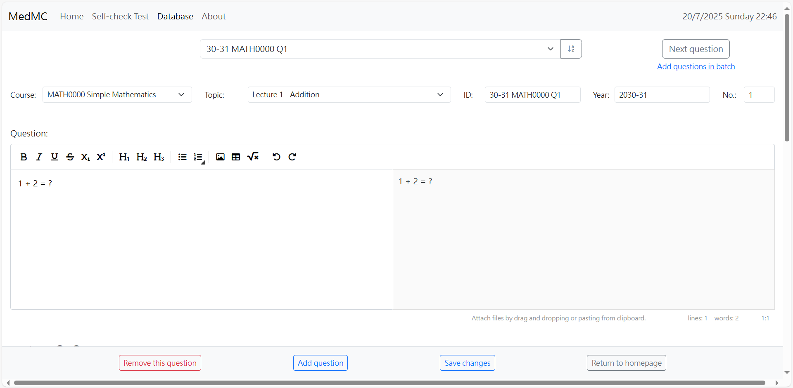

Get started with MedMC
Practice makes perfect. MedMC is a platform that collects multiple-choice questions from past exams, allowing you to practice more and consolidate the knowledge you've learnt. MedMC contains two main components, namely the “Self-check test” and the “Database”. We will now look into each function to give you an overview of how to use them efficiently.
Self-check test
Regarding the self-check test, this will probably be the place you will stay for the longest time. As the name implies, this will be the place where you can learn and practice.
Select the question database
To start a self-check test, you are provided with two options: using our predefined database or using your own database.
Use predefined database
Use the database we have prepared and start a self-check test with ease!
For simple use, you can go straight ahead for the first option without setting any database. You can check the content of the database here (I am so sorry for making the database so complicated) or simply check the updates from the homepage.
Use your database
Upload your own database in .zip format and start the test!
For advanced use, you may also provide your database in zip format created from the “Database” function (to be discussed in the next section) to practice self-defined questions.
Select options to generate the test
After selecting the suitable option, follow the instructions to choose the questions you have to practice on. (I know this is really annoying, but you have to go through it.) By clicking the submit button below, you can eventually start the test.

Image for reference only
Conduct and review the test
Try your best to answer the questions and press the "Submit" button below when you have finished the test.
After submission, you can check your score and find the explanation for the question.
This is also for reference only
Due to the unfortunate fact that this website is a static one, we are not able to save the test for you to continue the test or review it later.
A “Print & Save” button is provided for you to save the test on your device whenever you have to stop the test, or you would like to save the test for revision.
Note that you cannot open the test again on the website!
If you would like to redo the test on the same set of questions, you may click on the “Redo” button. Otherwise, you may click on the “Restart” button to restart a test.
Database
As for the “Database” component, this will be the place for you to create, update, and edit the database.
(This function is for advanced use only. You may skip this part if you are only using the self-check test function.)
Select the question database
Similarly, you will have to choose from 3 options: starting from the current database (i.e. the predefined database here), creating a new database, and importing from local drive. Start editing the database by choosing the appropriate option.
Edit the question database
Entering the interface for editing the database, you will see the following.
Set the information of the question
For the first row, you can choose the question to edit or add questions by clicking on the button or selecting from the drop-down list.
Check and update the information about the question in the second row. This is important for the program to select questions according to the user’s needs when generating the self-check test!
To add a new course or a new topic for the course, you can choose the “Add course …” or “Add topic …” options from the corresponding drop-down list.
Also, make sure that each question has a unique ID for the program to read the database correctly.
Set the content of the question
There are a couple of large boxes below for editing the content of the question, including the question itself, the options, and the explanation.
The editors require input in Markdown language from the left-hand side (or the box above for the options editor) and translate it into the styled text in the preview window on the right-hand side (or the box below for the options editor).
Check the full guide for the Markdown editor here to discover the different functions of the editor and the Markdown syntax.
For the options, you should click on the “−“ or “+” button to remove the last option or add a new option. Remember to choose the correct answer for the question by checking the radio button beside it.

Save changes for the question database
Don’t forget to save changes after editing. Again, as this is a static web application, you will have to save the generated zip file on your device. After that, you can try your database in the “Self-check test” function by uploading it.
Contribute
If you have found any bugs or would like to support this website by providing suggestions, please don’t hesitate to contact me through WhatsApp (if you know my contact number) or email scms419@gmail.com. Thank you for using the website, and I wish you a 爆4.